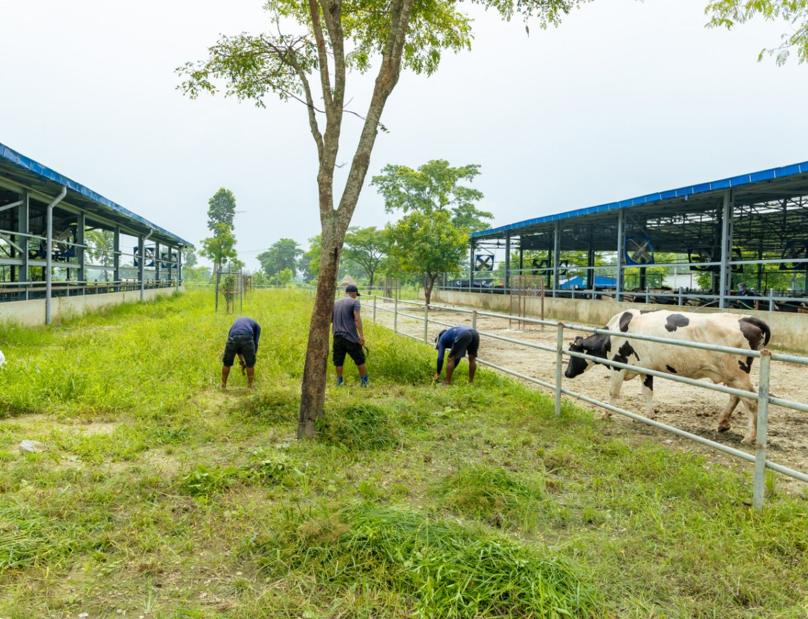
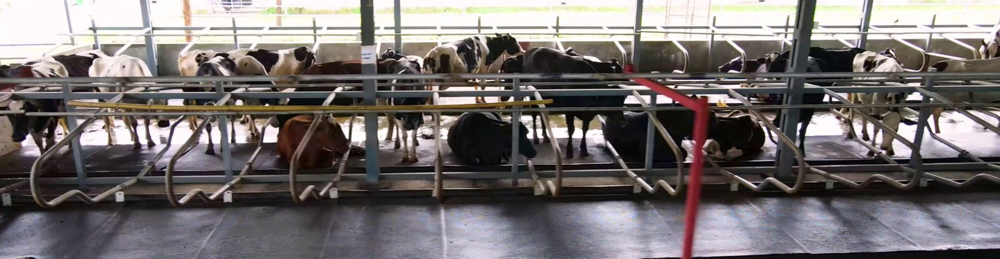
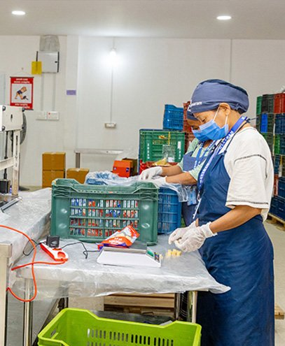
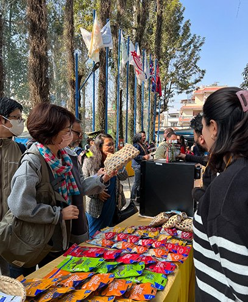
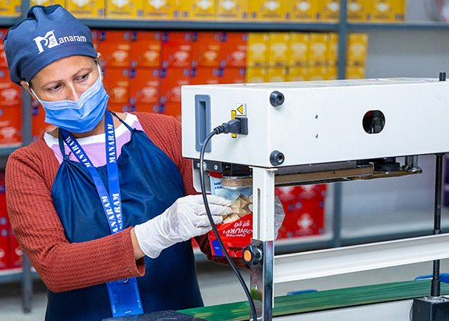
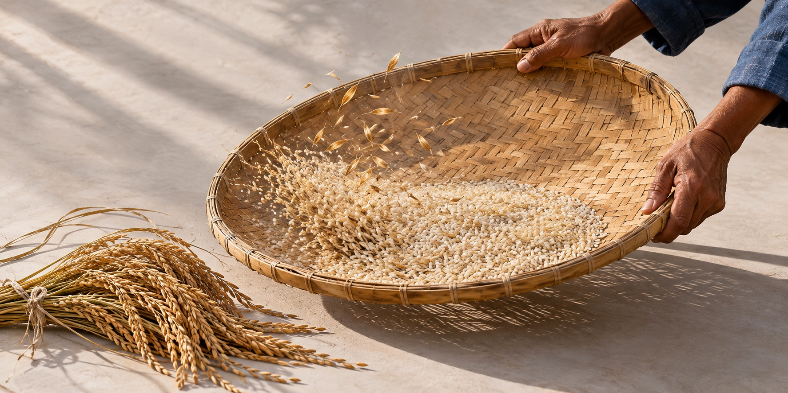

Retail partner in Nepal
Retail partner in Nepal Shop now
Shop now

From Birtamod, Jhapa, Nepal.
We are
Manaram Farm.
We started Manaram Farm in 2014 to make more of Nepal’s food here at home. Today, our team turns milk from our herd, fruit from local orchards and roasted grains into foods for the everyday Nepali table.

It starts with our herd in Birtamod, Jhapa
Milk from our cows becomes paneer, yogurt and the butter we clarify for Mana Ko ghee. Working with our own herd keeps the dairy close to the people who make those foods.
Get to know our farmManaram Farm at a glance
Our story started in Birtamod, Jhapa. Today, the women on our team and the farmers we work with help bring Nepali dairy and pantry foods to market.
-
Founded in 2014
We started Manaram Farm in Birtamod, Jhapa, to create jobs for women and make more food locally.
-

Over 75% women
Women make up more than three quarters of our workforce.
-
Over 40,000 farmers
That’s how many farmers we’ve supported in Nepal since the farm began.
-
Ingredients from Nepal
We make paneer from our herd’s milk, pickle lapsi for achar and blend roasted grains for sattu.
Our vision for Himalayan food

“Our vision is to create high-quality Himalayan foods with innovative methods, promoting them locally and globally to help reduce Nepal’s trade deficit.”
Manaram Farm, Our Vision

The women who make our food
Creating jobs for women was part of the farm’s purpose from the beginning. Women now make up more than three quarters of our workforce. Their work reaches from the production floor to the packs that leave Birtamod, Jhapa.
See what we make
Nepali ingredients, familiar flavors
Tart lapsi gives our achar its bite. Roasted grains and pulses give Poshilo sattu its nutty taste. As we improve the way we prepare each batch, we keep those familiar flavors at the center of the recipe.
Explore our foodsWhere to find Manaram Farm
Our farm is in Ward 10 of Birtamod, Jhapa. Our Kathmandu office is in Baluwatar 4. For retail and distribution inquiries, we welcome you to get in touch.
Contact our team